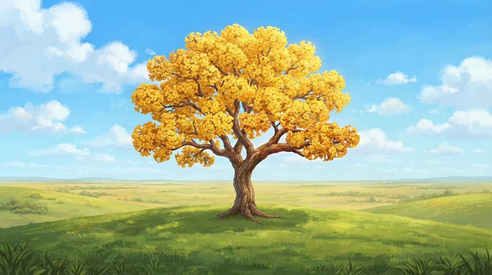
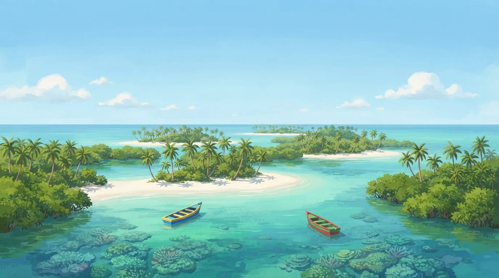
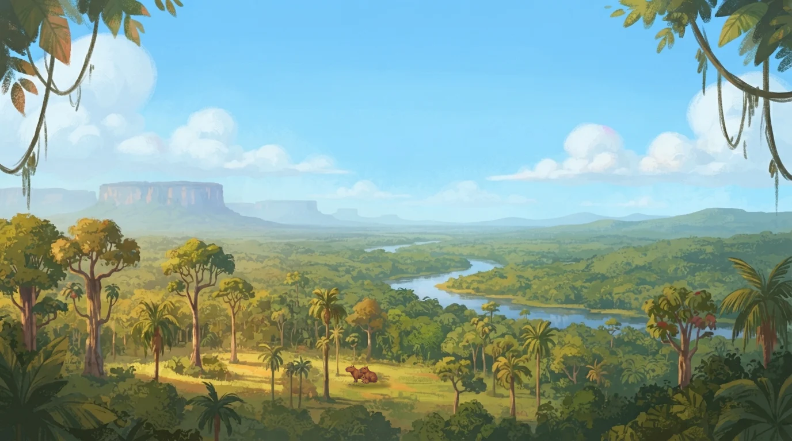
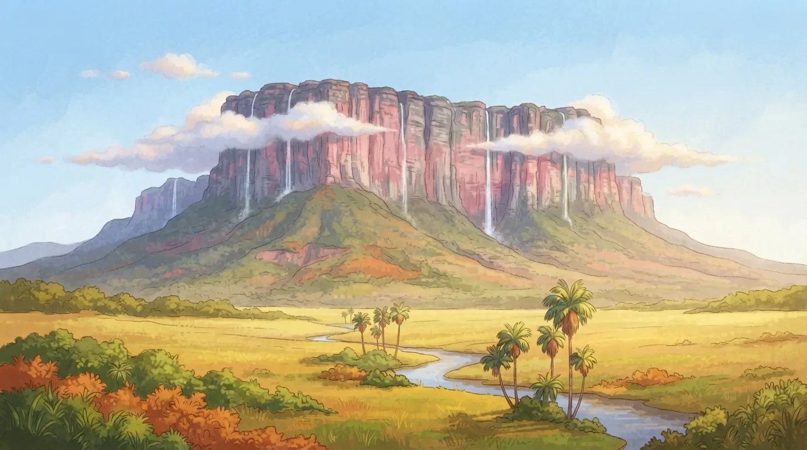
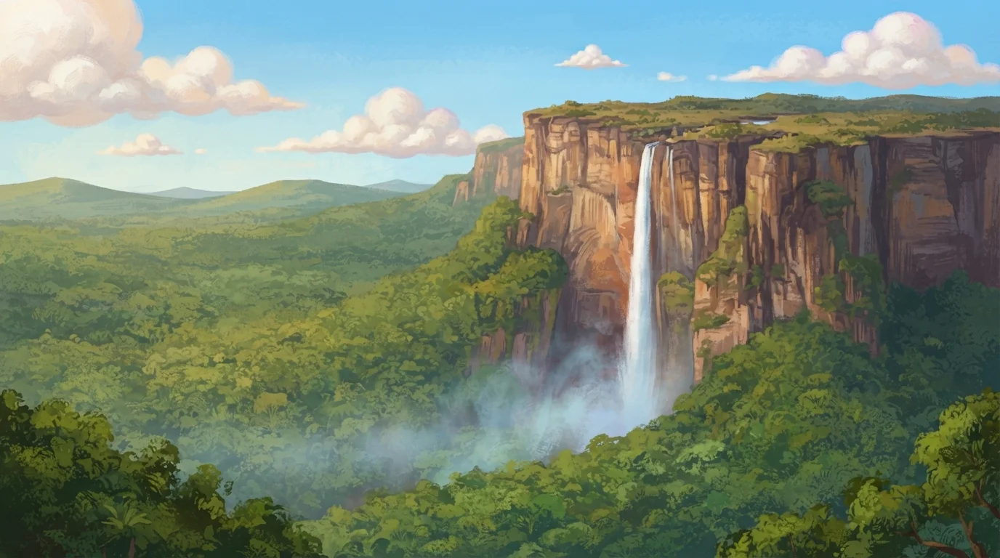
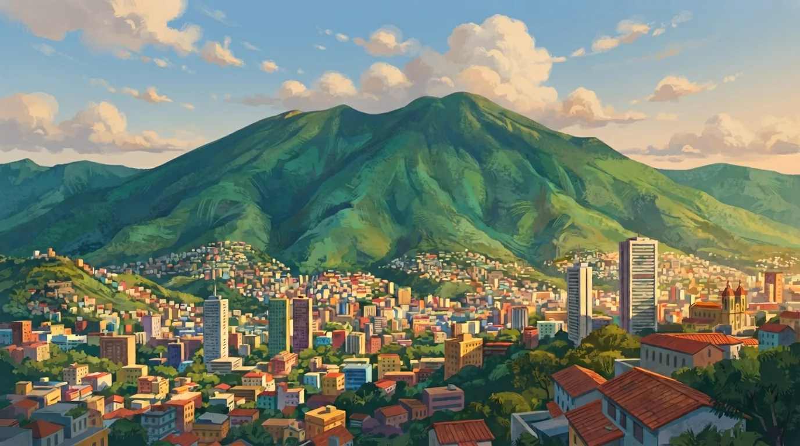
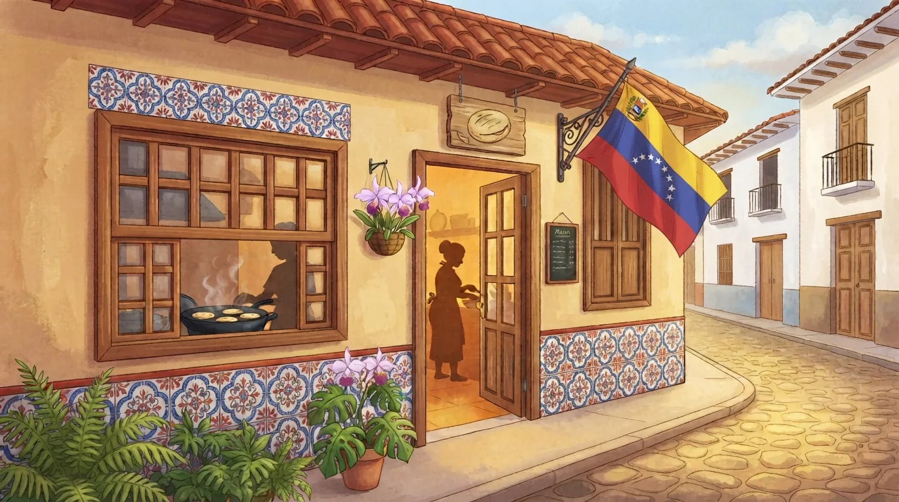
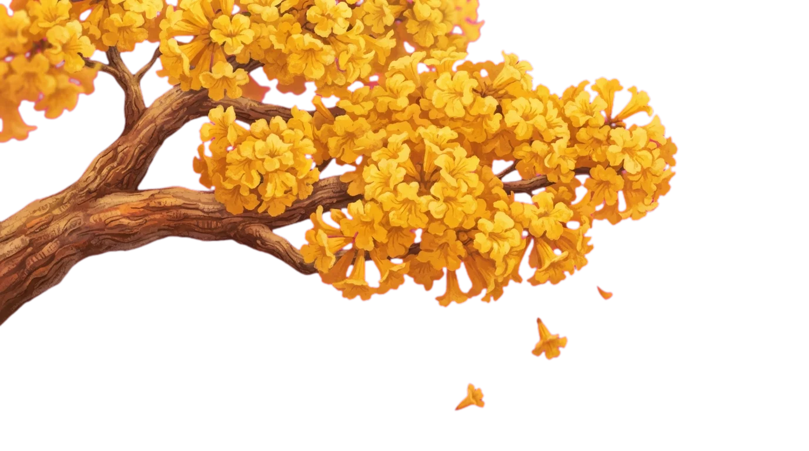
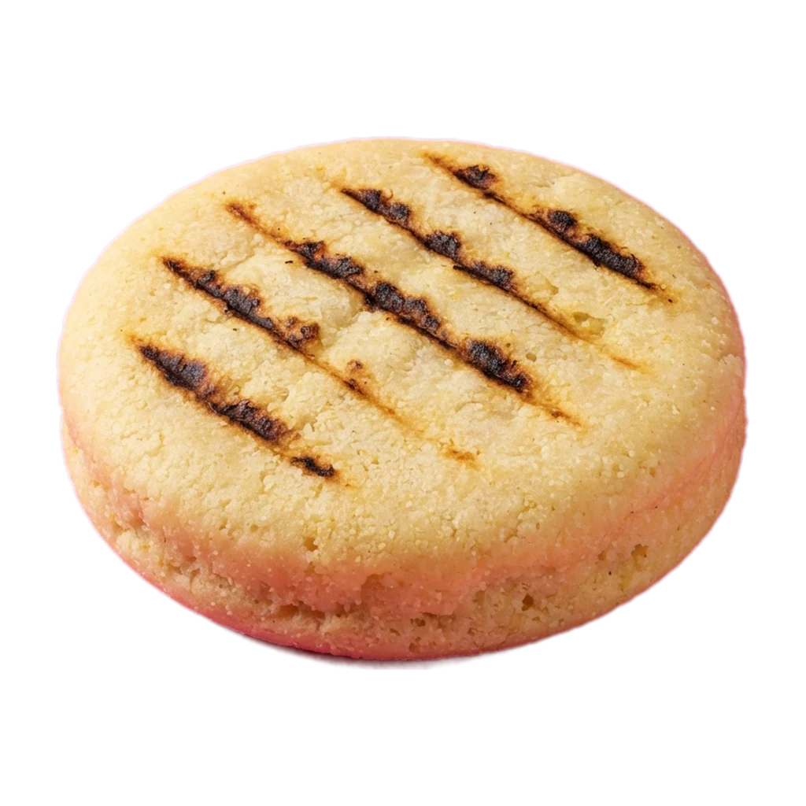
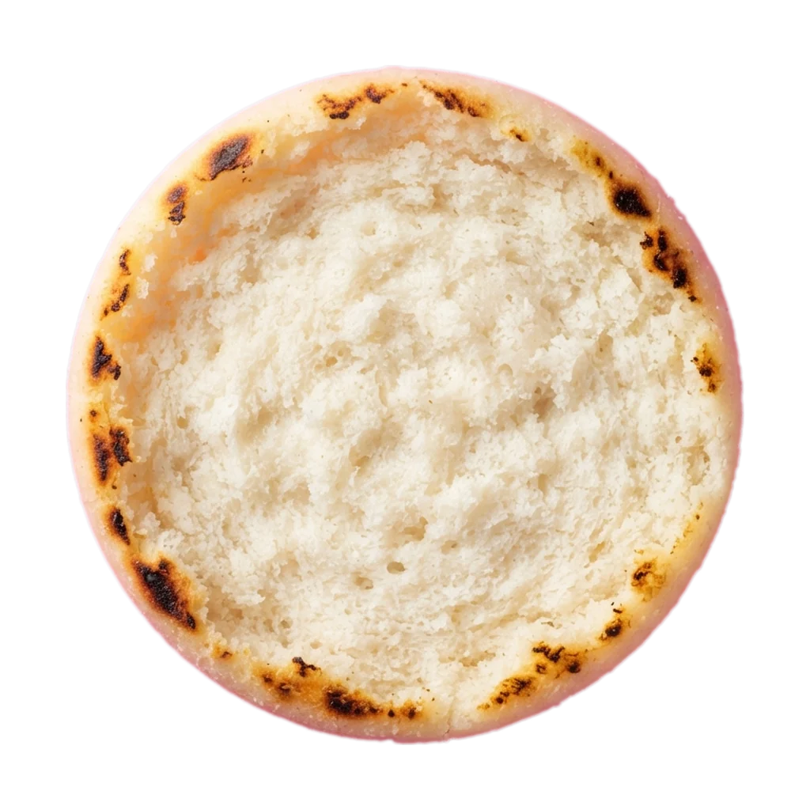

El viaje del turpial
Toda arepaempieza lejos.
Araguaney · el árbol nacional, en flor
Morrocoy · cayos de agua turquesa
La selva · donde pastan los chigüires
Roraima · el tepuy de la Gran Sabana
Salto Ángel · 979 m, el salto de agua más alto del mundo
Caracas · al pie del Ávila
La arepera · ya huele a budare
Venezuela · Hecha a mano
La arepa, capa a capa.
Baja despacio. Cada receta empieza vacía y se construye delante de ti, ingrediente por ingrediente.


Scroll